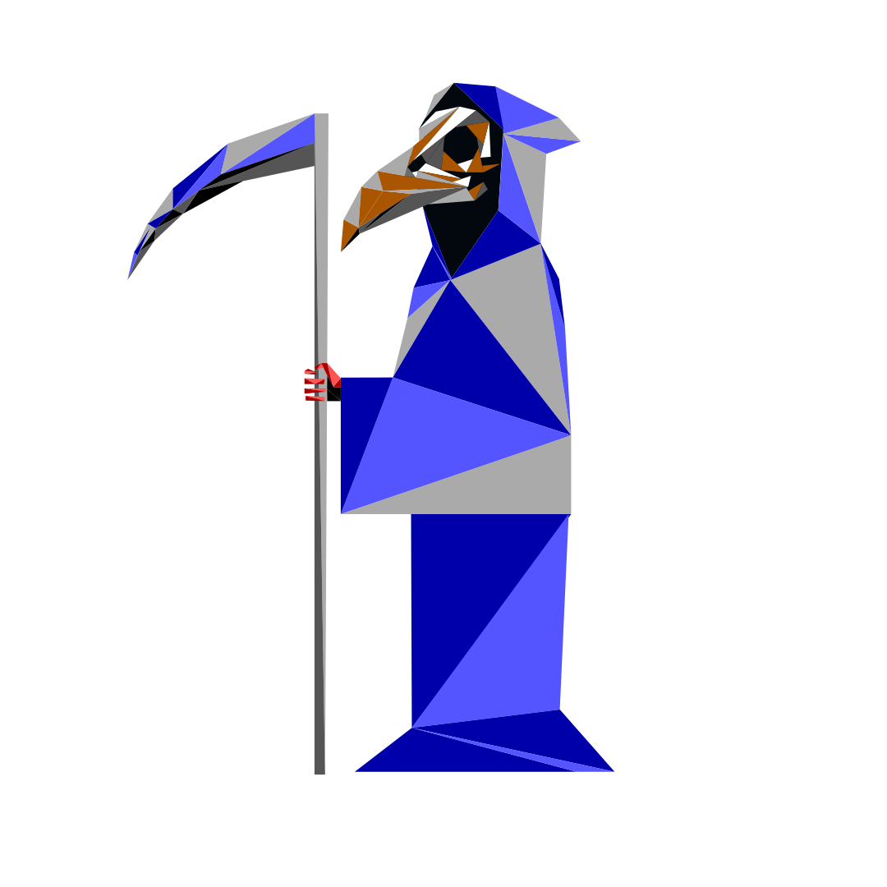

The Project
This project was made to create an interactive piece to show the values of a made up company threw their vision of mystery
Data
We looke dinto what styles are not very common while retaining some form of mystery. We settled on Color Graphics Adapter for color pallet in a polygonal artstyle with afantasy theme.
My Contribution
I did all of the programing and everything that went in the website that wasn't an image in Poly CGA image. In the proccess fo creating this project I wrote lines, said what each area should look like and made a mini game engien to make the website more dynamic despite having a few issues.